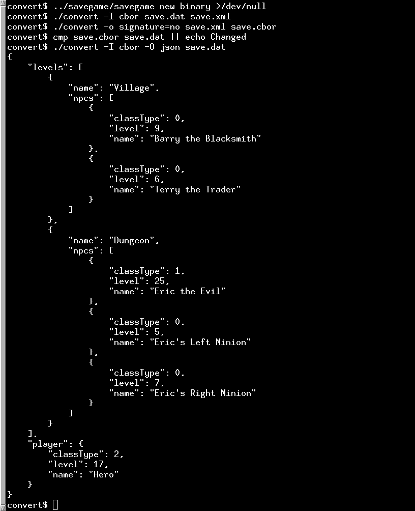

Convert Example
The Convert example demonstrates how to convert between different serialization formats.
The Convert example converts between the serialization formats JSON, CBOR, XML, QDataStream and text. It can also auto detect the format being used. Not all formats support both input and output, and they have different sets of which types they support. QDataStream and XML are the richest, followed by CBOR, then JSON, and then the plain text one.

The Converter Class
The Converter class is the abstract superclass for all the converters to and from all the formats. They all convert to and from the QVariant class, which is used to represent all the datastructures internally. The name() function returns the name of the converter. The directions() function is used to determine if a converter can be used for input, output, or both. The outputOptions() and optionsHelp() functions are used to get and query which options are used by the different converters. The probeFile() function is used to determine if a file has the same file format as the converter. The loadFile() function deserializes the given file, while the saveFile() serializes to the given file.
The CborConverter Class
The CborConverter class shows how to serialize to and from the CBOR-format. There is also a CborDiagnosticDumper class to output in CBOR diagnostic notation. That is similar to JSON, but not exactly, because it allows displaying the contents of a CBOR stream losslessly, while a conversion to JSON is lossy.
The convertCborValue() function is used to convert a QCborValue to a QVariant. It uses the helper functions convertCborMap() and convertCborArray().
static QVariant convertCborMap(const QCborMap &map) { VariantOrderedMap result; result.reserve(map.size()); for (auto pair : map) result.append({ convertCborValue(pair.first), convertCborValue(pair.second) }); return QVariant::fromValue(result); } static QVariant convertCborArray(const QCborArray &array) { QVariantList result; result.reserve(array.size()); for (auto value : array) result.append(convertCborValue(value)); return result; } static QVariant convertCborValue(const QCborValue &value) { if (value.isArray()) return convertCborArray(value.toArray()); if (value.isMap()) return convertCborMap(value.toMap()); return value.toVariant(); }
A CBOR-file is read using loadFile() function.
QVariant CborConverter::loadFile(QIODevice *f, const Converter *&outputConverter) const { const char *ptr = nullptr; if (auto file = qobject_cast<QFile *>(f)) ptr = reinterpret_cast<char *>(file->map(0, file->size())); QByteArray mapped = QByteArray::fromRawData(ptr, ptr ? f->size() : 0); QCborStreamReader reader(mapped); if (!ptr) reader.setDevice(f); if (reader.isTag() && reader.toTag() == QCborKnownTags::Signature) reader.next(); QCborValue contents = QCborValue::fromCbor(reader); qint64 offset = reader.currentOffset(); if (reader.lastError()) { fprintf(stderr, "Error loading CBOR contents (byte %lld): %s\n", offset, qPrintable(reader.lastError().toString())); fprintf(stderr, " bytes: %s\n", (ptr ? mapped.mid(offset, 9) : f->read(9)).toHex(' ').constData()); exit(EXIT_FAILURE); } else if (offset < mapped.size() || (!ptr && f->bytesAvailable())) { fprintf(stderr, "Warning: bytes remaining at the end of the CBOR stream\n"); } if (outputConverter == nullptr) outputConverter = &cborDiagnosticDumper; else if (outputConverter == null) return QVariant(); else if (!outputConverter->outputOptions().testFlag(SupportsArbitraryMapKeys)) return contents.toVariant(); return convertCborValue(contents); }
The convertFromVariant() function is used to convert a QVariant to a QCborValue.
static QCborValue convertFromVariant(const QVariant &v, TrimFloatingPoint fpTrimming) { if (v.userType() == QMetaType::QVariantList) { const QVariantList list = v.toList(); QCborArray array; for (const QVariant &v : list) array.append(convertFromVariant(v, fpTrimming)); return array; } if (v.userType() == qMetaTypeId<VariantOrderedMap>()) { const auto m = qvariant_cast<VariantOrderedMap>(v); QCborMap map; for (const auto &pair : m) map.insert(convertFromVariant(pair.first, fpTrimming), convertFromVariant(pair.second, fpTrimming)); return map; } if (v.userType() == QMetaType::Double && fpTrimming != Double) { float f = float(v.toDouble()); if (fpTrimming == Float16) return float(qfloat16(f)); return f; } return QCborValue::fromVariant(v); }
A CBOR-file is written using the saveFile() function.
void CborConverter::saveFile(QIODevice *f, const QVariant &contents, const QStringList &options) const { QCborValue v = convertFromVariant(contents, useFloat16 == Always ? Float16 : useFloat == Always ? Float : Double); QCborStreamWriter writer(f); if (useSignature) writer.append(QCborKnownTags::Signature); QCborValue::EncodingOptions opts; if (useIntegers) opts |= QCborValue::UseIntegers; if (useFloat != No) opts |= QCborValue::UseFloat; if (useFloat16 != No) opts |= QCborValue::UseFloat16; v.toCbor(writer, opts); }
The DataStreamConverter Class
The DataStreamConverter class is used to serialize to and from the QDataStream format. There is also the DebugTextDumper class for outputting the data lossless in a non-standardized human readable format.
The JsonConverter Class
The JsonConverter class is used to serialize to and from the JSON-format.
The XmlConverter Class
The XmlConverter class is used to serialize to and from the XML-format.
The TextConverter Class
The TextConverter class is used to serialize to and from a text format.
The NullConverter Class
The NullConverter class is an output serializer that does nothing.
See also CBOR Support in Qt and JSON Support in Qt.